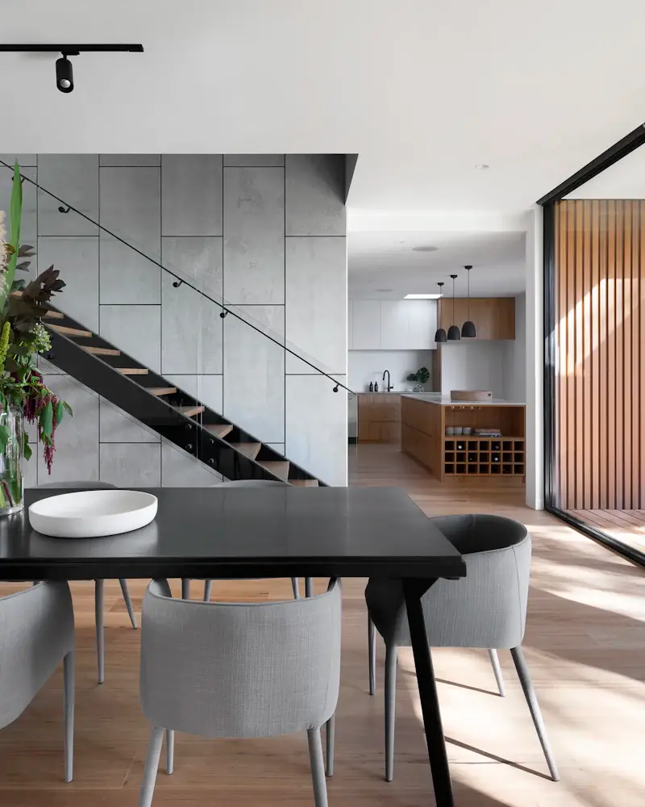
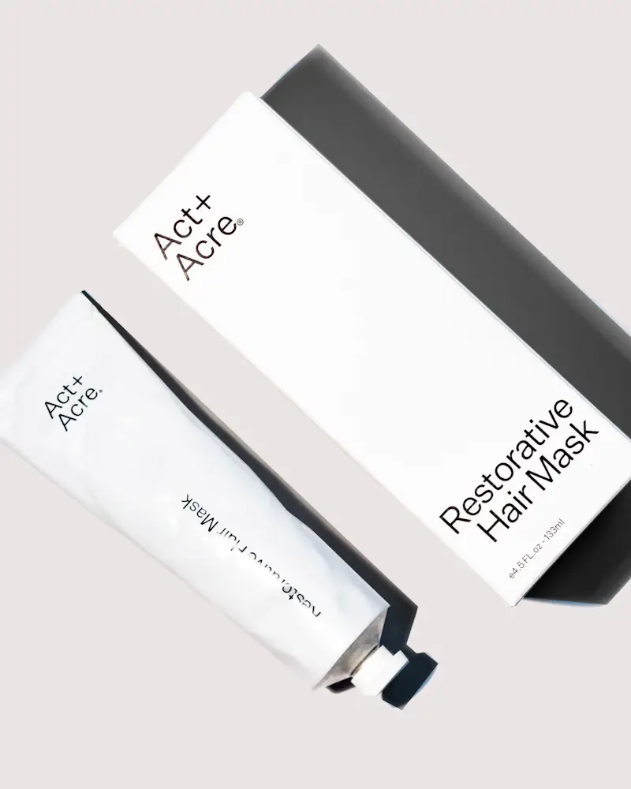

Szakértelem, törődés és szenvedély a szép bőrért
A bőröd egészsége az én küldetésem
Hiszek a gondoskodás erejében, a precíz szakértelemben és abban, hogy minden bőr megérdemli a legjobb törődést. Nálam nem sablonmegoldásokat kapsz, hanem személyre szabott kezeléseket, amelyek a valódi igényeidre és a bőröd egyedi állapotára épülnek. Ha úgy érzed, eljött az idő, hogy a bőröd a lehető legjobb formáját hozza – szeretettel várlak.
Időpontot foglalokTERMÉSZETES SZÉPSÉG. SZAKÉRTŐ GONDOSKODÁS.

Egy szebb holnap.

Ismerd meg a szakértődet!
Egy álomból született szalon
Szia, Eliza vagyok, a leendő kozmetikusod! A szépség mindig is az életem része volt, így nem volt kérdés, hogy a kozmetika lesz a hivatásom. 2011-ben megnyitottam saját szalonomat, az Eliza Beauty Salont, ahol azóta is azon dolgozom, hogy vendégeim bőre ne csak szebb, hanem egészségesebb is legyen. Az első évek sok tanulással és kihívással teltek, de a kitartásomnak köszönhetően folyamatosan fejlődtem. 2018-ban a Beauty Academy szakmai trénereként és oktatójaként dolgoztam, segítve más kozmetikusokat a legmodernebb eljárások elsajátításában. 2019-ben mesterkozmetikusi címet szereztem, hogy még magasabb szinten végezhessem a kezeléseimet. Hiszem, hogy a kozmetika többről szól, mint a szép bőrről – önbizalomról, jó közérzetről és énidőről is. Ezért a kezeléseim célja nemcsak a látványos eredmény, hanem az is, hogy vendégeim feltöltődve és magabiztosan távozzanak.
Kiemelések: 14 év tapasztalat · Több mint 1300 vendég · Szakmai tréner és oktató · Mesterkozmetikus
Értékeim, amikből nem engedek
Hiszek a minőségben, az őszinte szakértelemben és abban, hogy a legjobb eredményekhez valódi odafigyelés és korszerű megoldások kellenek. Minden vendégem számára ezt a gondoskodást és elkötelezettséget nyújtom.
Öt érték (a rövid címüket te adhatod meg, pl. Minőség, Hitelesség, Természetesség, Fejlődés, Énidő):
1. Minden kezelés során a legmagasabb minőséget nyújtom, mert hiszem, hogy a bőr egészsége nem kompromisszum kérdése.
2. Csak olyan eljárásokat alkalmazok, amelyek valóban működnek, felesleges ígéretek helyett tudományosan igazolt megoldásokkal dolgozom.
3. A természetes szépség kiemelése a célom, ezért olyan kezeléseket ajánlok, amelyek hosszú távon is támogatják a bőr egészségét.
4. A folyamatos tanulás és fejlődés elengedhetetlen számomra, hogy mindig naprakész tudással segíthessem vendégeimet.
5. Hiszem, hogy egy jó kozmetikai kezelés nemcsak a bőrt, hanem a lelket is felfrissíti – nálam minden kezelés egyben énidő is.
Időpontot kérek
Profizmus és harmónia
Ezt kapod az Eliza Beauty Salonban
A kezelések hatékonysága nemcsak a szakértelmen, hanem a környezeten is múlik. Az Eliza Beauty Salon egy olyan hely, ahol a legmodernebb technológiák, a prémium hatóanyagok és a nyugodt, exkluzív légkör egyesülnek. Itt minden arról szól, hogy a bőröd megkapja a legjobb törődést, te pedig egy pillanatra kiszakadhass a mindennapok rohanásából.
Adj egy esélyt a bőrödnek a megújulásra!
A bőröd a legnagyobb érzékszerved, folyamatosan véd és alkalmazkodik – mégis gyakran háttérbe szorul a mindennapi rohanásban. Ha úgy érzed, hogy itt az ideje egy kis extra figyelemnek, most megteheted az első lépést. Egy jól megválasztott kezelés nemcsak a bőrödet szépíti, hanem a közérzetedet is javítja. Foglalj időpontot, és tapasztald meg a különbséget!
Időpontot kérekEGY KIS FIGYELEM, CSAK NEKED
Foglalj időpontot,
és induljon a változás!
Kérdésed van a kezelésekről, vagy időpontot szeretnél egyeztetni? Keress bizalommal, és segítek megtalálni a számodra legjobb megoldást!
+36 20 344 9272 ↗hello.elizabeauty@gmail.com1092 Budapest, Ráday u. 1.
H–P: 9:00–16:00 · Szo–V: zárva
Kizárólag előre egyeztetett időpontban.